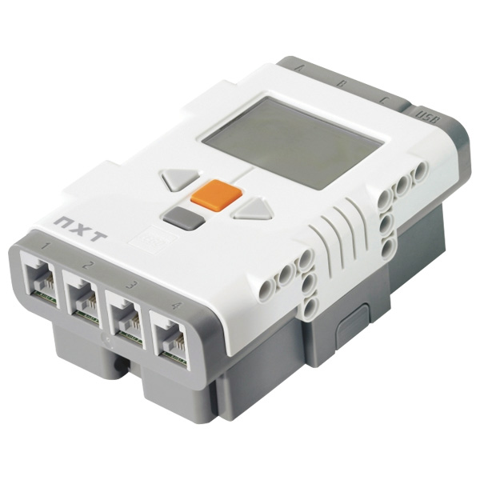

Séquence 1 : Découverte, programmation iconique en NXT-G

Construction du robot
Nous avons fait connaissance avec l'objet de nos expérimentations futures en construisant un robot en Lego Technics.
Cette plateforme est animée par une brique programmable NXT (voir ci-contre).
Deux moyens permettent de programmer la brique NXT :
- utiliser le logiciel MindStorm (programmation via NXT-G)
- utiliser un langage de programmation dédié
MindStorm
Le NXC-G est un moyen de programmer le robot au moyen d'un éditeur graphique modélisant les instructions au moyen de blocs.
Cette voie a pour principal avantage de ne nécessiter aucune connaissance préalable en programmation, et d'élaborer un comportement (très) simple avec un peu de logique. On notera que, dès que l'on cherche à implémenter des algorithmes un peu plus complexes, le NXT-G devient parfaitement inadapté.
Le NXT-G est un langage basé sur l'exécution de blocs dans un ordre définit par l'utilisateur. Si les blocs prit uns à uns n'ont aucune utilité réelle, c'est la séquence logique de blocs qui donnent au programme sa puissance. Quelques exemples de blocs : avancer à l'infini, attendre que le capteur tactile soit enfoncé, tourner à droite. Si en théorie ce langage semble rapide à mettre en place et agréable à gérer, il assure en pratique un tas de spaguettis informe et incompréhensible dés que l'on veut gérer des conditions avancées et autres options utiles.
 Un exemple de programme un peu avancé...
Un exemple de programme un peu avancé...
Le programme le plus aboutit implémenté en NXT-G que nous ayons fait utilisait deux commutations et dirigeais un robot pourvu de deux télémètres (un dirigé à sa droite, un dirigé à sa gauche), et, lorsqu'il heurtait un obstacle, analysait les obstacles à droite et à gauche et opérait un virage en fonction du résultat des deux sondages. Le programme n'aurait pas pu être complexifié, deux commutations étant très gourmandes en place sur le logiciel qui ne permet pas d'étendre la surface où l'on pose les blocs... Autant dire que nous étions pressés de trouver une vraie programmation, avec un vrai langage et un vrai IDE.
Exemples de programmation
Attente sur des capteurs
Il est possible en NXT-G de réaliser des attentes sur des capteurs (comme des interruptions pas belles...) avec une séquence de blocs de ce type :
 Un exemple d'avancer avec attente conditionnelle sur un capteur tactile
Un exemple d'avancer avec attente conditionnelle sur un capteur tactile
Conditions utilisant des capteurs
La condition suivante tourne à droite ou à gauche en fonction de la distance :
 Un exemple de commutation en fonction de l'état d'un capteur
Un exemple de commutation en fonction de l'état d'un capteur